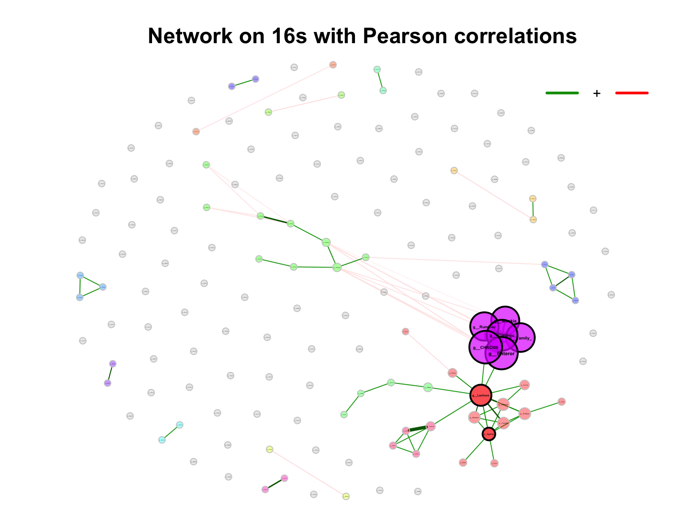
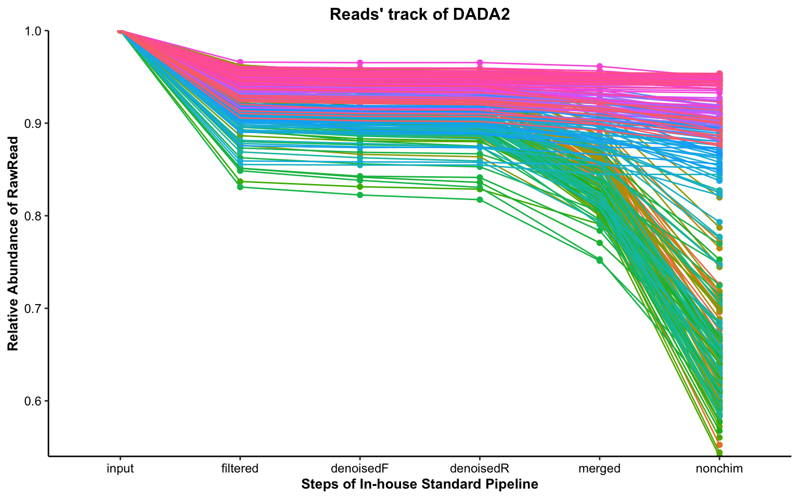

Chapter 9 Test Example
9.1 Loading packages
library(XMAS2)
library(dplyr)
library(tibble)
library(phyloseq)
library(ggplot2)
library(ggpubr)
library(SummarizedExperiment)
library(readxl)9.2 Loading data
dada2_res <- readRDS("DataSet/RawData/dada2_res.rds")
tree <- read_tree("DataSet/RawData/tree.nwk")
metadata <- read_xlsx("DataSet/RawData/诺禾宏基因组678月-ZH.xlsx", sheet = 3)
metaphlan2_res <- read.table("DataSet/RawData/merged_metaphlan2.tsv",
header = TRUE, stringsAsFactors = FALSE) %>%
tibble::rownames_to_column("ID")9.3 Metaphlan2 result
metaphlan2_res_list <- import_metaphlan_taxa(metaphlan2_res, taxa_level = "Species")
tax_tab <- metaphlan2_res_list$tax_tab
otu_tab <- metaphlan2_res_list$abu_tab
colnames(otu_tab) <- gsub("X", "S_", colnames(otu_tab))
sam_tab <- metadata %>% data.frame() %>%
dplyr::mutate(Group=ifelse(SampleType == "粪便", "Stool",
ifelse(SampleType == "QC", "QC", "Product"))) %>%
dplyr::select(SampleTubeID, Group, everything())
rownames(sam_tab) <- paste0("S_", sam_tab$SeqID_MGS)
overlap_samples <- intersect(rownames(sam_tab), colnames(otu_tab))
otu_tab_cln <- otu_tab[, match(overlap_samples, colnames(otu_tab))]
sam_tab_cln <- sam_tab[match(overlap_samples, rownames(sam_tab)), ]
rownames(sam_tab_cln) <- overlap_samples
metaphlan2_ps <- get_metaphlan_phyloseq(otu_tab = otu_tab_cln,
sam_tab = sam_tab_cln,
tax_tab = tax_tab)
metaphlan2_ps## phyloseq-class experiment-level object
## otu_table() OTU Table: [ 328 taxa and 145 samples ]
## sample_data() Sample Data: [ 145 samples by 12 sample variables ]
## tax_table() Taxonomy Table: [ 328 taxa by 7 taxonomic ranks ]9.4 Step1: Reads’ Track
plot_Dada2Track(data=dada2_res$reads_track) +
guides(color="none")
Figure 9.1: DADA2’ read track (Example)
9.5 Step2: Convert inputs into phyloseq data
tax_tab_16s <- import_dada2_taxa(dada2_res$tax_tab)
otu_tab_16s <- dada2_res$seq_tab
# Shouldn't use the Total Number as SampleID (wrong: 123456; right: X123456)
rownames(otu_tab_16s) <- paste0("S_", rownames(otu_tab_16s))
sam_tab_16s <- metadata %>% data.frame() %>%
dplyr::mutate(Group=ifelse(SampleType == "粪便", "Stool",
ifelse(SampleType == "QC", "QC", "Product"))) %>%
dplyr::filter(SampleTubeID %in% sam_tab_cln$SampleTubeID) %>%
dplyr::select(SampleTubeID, Group, everything())
rownames(sam_tab_16s) <- paste0("S_", sam_tab_16s$SeqID_16s)
overlap_samples_16s <- intersect(rownames(sam_tab_16s), rownames(otu_tab_16s))
otu_tab_16s_cln <- otu_tab_16s[match(overlap_samples_16s, rownames(otu_tab_16s)), ]
sam_tab_16s_cln <- sam_tab_16s[match(overlap_samples_16s, rownames(sam_tab_16s)), ]
dada2_ps <- get_dada2_phyloseq(
seq_tab = otu_tab_16s_cln,
tax_tab = tax_tab_16s,
sam_tab = sam_tab_16s_cln,
phy_tree = tree)
dada2_ps## phyloseq-class experiment-level object
## otu_table() OTU Table: [ 1948 taxa and 145 samples ]
## sample_data() Sample Data: [ 145 samples by 12 sample variables ]
## tax_table() Taxonomy Table: [ 1948 taxa by 7 taxonomic ranks ]
## phy_tree() Phylogenetic Tree: [ 1948 tips and 1933 internal nodes ]
## refseq() DNAStringSet: [ 1948 reference sequences ]if (!dir.exists("DataSet/Step2/")) {
dir.create("DataSet/Step2/")
}
saveRDS(dada2_ps, "DataSet/Step2/Donor_16s_phyloseq.RDS", compress = TRUE)9.6 Step3: BRS checking
dada2_ps <- readRDS("DataSet/Step2/Donor_16s_phyloseq.RDS")
dada2_ps_genus <- summarize_taxa(dada2_ps, taxa_level = "Genus")
tail(dada2_ps_genus@sam_data %>% data.frame())## SampleTubeID Group Date_Sequencing ProductID SampleType ProductBatch Date_Sampling Date_Receiving SeqID_MGS SeqID_16s
## S_7929 GGM50-210730 Stool 2021-08-03 M50 粪便 CYM50-210735 2021.07.30 2021-08-06 7769 7929
## S_7930 CYM50-210735-0727 Product 2021-08-03 M50 肠菌胶囊 CYM50-210735 2021.07.27 2021-08-06 7770 7930
## S_7931 CYM50-210735-0728 Product 2021-08-03 M50 肠菌胶囊 CYM50-210735 2021.07.28 2021-08-06 7771 7931
## S_7932 CYM50-210735-0729 Product 2021-08-03 M50 肠菌胶囊 CYM50-210735 2021.07.29 2021-08-06 7772 7932
## S_7933 CYM50-210735-0730 Product 2021-08-03 M50 肠菌胶囊 CYM50-210735 2021.07.30 2021-08-06 7773 7933
## S_7327 Community QC <NA> Ref QC <NA> <NA> <NA> 7222 7327
## Pipeline_MGS Pipeline_16s
## S_7929 /share/work/HPC/work_tmp/PipelineJob_180_20210923/output /share/projects/Engineering/pipeline_output/PipelineJob_304_20211203
## S_7930 /share/work/HPC/work_tmp/PipelineJob_180_20210923/output /share/projects/Engineering/pipeline_output/PipelineJob_304_20211203
## S_7931 /share/work/HPC/work_tmp/PipelineJob_180_20210923/output /share/projects/Engineering/pipeline_output/PipelineJob_304_20211203
## S_7932 /share/work/HPC/work_tmp/PipelineJob_180_20210923/output /share/projects/Engineering/pipeline_output/PipelineJob_304_20211203
## S_7933 /share/work/HPC/work_tmp/PipelineJob_180_20210923/output /share/projects/Engineering/pipeline_output/PipelineJob_304_20211203
## S_7327 /share/work/HPC/work_tmp/PipelineJob_180_20210923/output /share/projects/Engineering/pipeline_output/PipelineJob_304_20211203run_RefCheck(
ps=dada2_ps_genus,
BRS_ID="S_7327",
Reference=NULL,
Ref_type="16s",
Save=NULL)## 8002 8003 8004 8005 8006 8007 8008 8009 S_7327 mean
## Lactobacillus 2.61732573 3.36856272 3.44379163 3.88394343 5.92927 5.780008 5.781891 6.326723 12.263006 5.48828
## Escherichia/Shigella 15.27581475 16.00265210 12.36527954 14.08077142 10.84235 13.432037 10.157432 11.599456 12.119942 12.87508
## Enterococcus 14.51444842 14.66472707 11.04239952 11.66901114 13.16748 12.073609 12.887711 12.849247 7.258671 12.23637
## Impurity_level 0.08562792 0.06531291 0.05987576 0.06228054 0.00000 0.000000 0.000000 0.000000 68.360000 7.62590
## Evaluation
## Lactobacillus S_7327 didn't pass the threshold (2022-06-01 18:12:16).
## Escherichia/Shigella S_7327 didn't pass the threshold (2022-06-01 18:12:16).
## Enterococcus S_7327 didn't pass the threshold (2022-06-01 18:12:16).
## Impurity_level S_7327 didn't pass the threshold (2022-06-01 18:12:16).dada2_ps_remove_BRS <- get_GroupPhyloseq(
ps = dada2_ps,
group = "Group",
group_names = "QC")
dada2_ps_remove_BRS## phyloseq-class experiment-level object
## otu_table() OTU Table: [ 1948 taxa and 144 samples ]
## sample_data() Sample Data: [ 144 samples by 12 sample variables ]
## tax_table() Taxonomy Table: [ 1948 taxa by 7 taxonomic ranks ]
## phy_tree() Phylogenetic Tree: [ 1948 tips and 1933 internal nodes ]
## refseq() DNAStringSet: [ 1948 reference sequences ]if (!dir.exists("DataSet/Step3/")) {
dir.create("DataSet/Step3/")
}
saveRDS(dada2_ps_remove_BRS, "DataSet/Step3/Donor_16s_phyloseq_remove_BRS.RDS", compress = TRUE)9.7 Step4: Rarefaction curves
dada2_ps_remove_BRS <- readRDS("DataSet/Step3/Donor_16s_phyloseq_remove_BRS.RDS")
plot_RarefCurve(ps = dada2_ps_remove_BRS,
taxa_level = "OTU",
step = 100,
label = "Group",
color = "Group")## rarefying sample S_7271
## rarefying sample S_7272
## rarefying sample S_7273
## rarefying sample S_7274
## rarefying sample S_7275
## rarefying sample S_7276
## rarefying sample S_7277
## rarefying sample S_7278
## rarefying sample S_7279
## rarefying sample S_7280
## rarefying sample S_7281
## rarefying sample S_7282
## rarefying sample S_7283
## rarefying sample S_7284
## rarefying sample S_7285
## rarefying sample S_7286
## rarefying sample S_7287
## rarefying sample S_7288
## rarefying sample S_7289
## rarefying sample S_7290
## rarefying sample S_7291
## rarefying sample S_7292
## rarefying sample S_7293
## rarefying sample S_7294
## rarefying sample S_7295
## rarefying sample S_7296
## rarefying sample S_7297
## rarefying sample S_7298
## rarefying sample S_7299
## rarefying sample S_7300
## rarefying sample S_7301
## rarefying sample S_7302
## rarefying sample S_7303
## rarefying sample S_7304
## rarefying sample S_7305
## rarefying sample S_7306
## rarefying sample S_7307
## rarefying sample S_7308
## rarefying sample S_7309
## rarefying sample S_7310
## rarefying sample S_7311
## rarefying sample S_7312
## rarefying sample S_7313
## rarefying sample S_7314
## rarefying sample S_7315
## rarefying sample S_7316
## rarefying sample S_7317
## rarefying sample S_7318
## rarefying sample S_7319
## rarefying sample S_7320
## rarefying sample S_7321
## rarefying sample S_7322
## rarefying sample S_7323
## rarefying sample S_7324
## rarefying sample S_7325
## rarefying sample S_7326
## rarefying sample S_7846
## rarefying sample S_7847
## rarefying sample S_7848
## rarefying sample S_7849
## rarefying sample S_7850
## rarefying sample S_7851
## rarefying sample S_7852
## rarefying sample S_7853
## rarefying sample S_7854
## rarefying sample S_7855
## rarefying sample S_7856
## rarefying sample S_7857
## rarefying sample S_7858
## rarefying sample S_7859
## rarefying sample S_7860
## rarefying sample S_7861
## rarefying sample S_7862
## rarefying sample S_7863
## rarefying sample S_7864
## rarefying sample S_7865
## rarefying sample S_7866
## rarefying sample S_7867
## rarefying sample S_7868
## rarefying sample S_7869
## rarefying sample S_7870
## rarefying sample S_7871
## rarefying sample S_7872
## rarefying sample S_7873
## rarefying sample S_7874
## rarefying sample S_7875
## rarefying sample S_7876
## rarefying sample S_7877
## rarefying sample S_7878
## rarefying sample S_7879
## rarefying sample S_7880
## rarefying sample S_7881
## rarefying sample S_7882
## rarefying sample S_7883
## rarefying sample S_7884
## rarefying sample S_7885
## rarefying sample S_7886
## rarefying sample S_7887
## rarefying sample S_7888
## rarefying sample S_7889
## rarefying sample S_7890
## rarefying sample S_7891
## rarefying sample S_7892
## rarefying sample S_7893
## rarefying sample S_7894
## rarefying sample S_7895
## rarefying sample S_7896
## rarefying sample S_7897
## rarefying sample S_7898
## rarefying sample S_7899
## rarefying sample S_7900
## rarefying sample S_7901
## rarefying sample S_7902
## rarefying sample S_7903
## rarefying sample S_7904
## rarefying sample S_7905
## rarefying sample S_7906
## rarefying sample S_7907
## rarefying sample S_7908
## rarefying sample S_7909
## rarefying sample S_7910
## rarefying sample S_7911
## rarefying sample S_7912
## rarefying sample S_7913
## rarefying sample S_7914
## rarefying sample S_7915
## rarefying sample S_7916
## rarefying sample S_7917
## rarefying sample S_7918
## rarefying sample S_7919
## rarefying sample S_7920
## rarefying sample S_7921
## rarefying sample S_7922
## rarefying sample S_7923
## rarefying sample S_7924
## rarefying sample S_7925
## rarefying sample S_7926
## rarefying sample S_7927
## rarefying sample S_7928
## rarefying sample S_7929
## rarefying sample S_7930
## rarefying sample S_7931
## rarefying sample S_7932
## rarefying sample S_7933

Figure 9.2: Rarefaction curves (Example)
9.8 Step5: Rarefy otu counts
dada2_ps_remove_BRS <- readRDS("DataSet/Step3/Donor_16s_phyloseq_remove_BRS.RDS")
summarize_phyloseq(dada2_ps_remove_BRS)## [[1]]
## [1] "1] Min. number of reads = 33267"
##
## [[2]]
## [1] "2] Max. number of reads = 153367"
##
## [[3]]
## [1] "3] Total number of reads = 10909876"
##
## [[4]]
## [1] "4] Average number of reads = 75763.0277777778"
##
## [[5]]
## [1] "5] Median number of reads = 71985.5"
##
## [[6]]
## [1] "7] Sparsity = 0.912599104494638"
##
## [[7]]
## [1] "6] Any OTU sum to 1 or less? YES"
##
## [[8]]
## [1] "8] Number of singletons = 837"
##
## [[9]]
## [1] "9] Percent of OTUs that are singletons\n (i.e. exactly one read detected across all samples)0"
##
## [[10]]
## [1] "10] Number of sample variables are: 12"
##
## [[11]]
## [1] "SampleTubeID" "Group" "Date_Sequencing" "ProductID" "SampleType" "ProductBatch" "Date_Sampling"
## [8] "Date_Receiving" "SeqID_MGS" "SeqID_16s" "Pipeline_MGS" "Pipeline_16s"dada2_ps_rare <- norm_rarefy(dada2_ps_remove_BRS, size = 33267, rng_seed = 123)
dada2_ps_rare## phyloseq-class experiment-level object
## otu_table() OTU Table: [ 1091 taxa and 144 samples ]
## sample_data() Sample Data: [ 144 samples by 12 sample variables ]
## tax_table() Taxonomy Table: [ 1091 taxa by 7 taxonomic ranks ]
## phy_tree() Phylogenetic Tree: [ 1091 tips and 1086 internal nodes ]
## refseq() DNAStringSet: [ 1091 reference sequences ]if (!dir.exists("DataSet/Step5/")) {
dir.create("DataSet/Step5/")
}
saveRDS(dada2_ps_rare, "DataSet/Step5/Donor_16s_phyloseq_remove_BRS_rare.RDS", compress = TRUE)9.9 Step6: Extracting specific taxonomic level
dada2_ps_rare <- readRDS("DataSet/Step5/Donor_16s_phyloseq_remove_BRS_rare.RDS")
dada2_ps_rare_genus <- summarize_taxa(dada2_ps_rare, taxa_level = "Genus")
dada2_ps_rare_genus## phyloseq-class experiment-level object
## otu_table() OTU Table: [ 225 taxa and 144 samples ]
## sample_data() Sample Data: [ 144 samples by 12 sample variables ]
## tax_table() Taxonomy Table: [ 225 taxa by 6 taxonomic ranks ]dada2_ps_rare_order <- summarize_taxa(dada2_ps_rare, taxa_level = "Order")
dada2_ps_rare_order## phyloseq-class experiment-level object
## otu_table() OTU Table: [ 37 taxa and 144 samples ]
## sample_data() Sample Data: [ 144 samples by 12 sample variables ]
## tax_table() Taxonomy Table: [ 37 taxa by 4 taxonomic ranks ]dada2_ps_rare_phylum <- summarize_taxa(dada2_ps_rare, taxa_level = "Phylum")
dada2_ps_rare_phylum## phyloseq-class experiment-level object
## otu_table() OTU Table: [ 15 taxa and 144 samples ]
## sample_data() Sample Data: [ 144 samples by 12 sample variables ]
## tax_table() Taxonomy Table: [ 15 taxa by 2 taxonomic ranks ]if (!dir.exists("DataSet/Step6/")) {
dir.create("DataSet/Step6/")
}
saveRDS(dada2_ps_rare_genus, "DataSet/Step6/Donor_16s_phyloseq_remove_BRS_rare_genus.RDS", compress = TRUE)
saveRDS(dada2_ps_rare_order, "DataSet/Step6/Donor_16s_phyloseq_remove_BRS_rare_order.RDS", compress = TRUE)
saveRDS(dada2_ps_rare_phylum, "DataSet/Step6/Donor_16s_phyloseq_remove_BRS_rare_phylum.RDS", compress = TRUE)9.10 Step7: GlobalView
dada2_ps_rare_genus <- readRDS("DataSet/Step6/Donor_16s_phyloseq_remove_BRS_rare_genus.RDS")
# alpha
dada2_ps_rare_genus_alpha <- run_alpha_diversity(ps=dada2_ps_rare_genus,
measures = c("Shannon", "Chao1", "Observed"))
plot_boxplot(data=dada2_ps_rare_genus_alpha,
y_index = c("Shannon", "Chao1", "Observed"),
group = "Group",
group_names = c("Stool", "Product"),
group_color = c("red", "blue"))
Figure 9.3: diversity and ordination and composition(Example)
# beta
dada2_ps_beta <- run_beta_diversity(ps=dada2_ps_rare_genus, method = "bray")
plot_distance_corrplot(dada2_ps_beta$BetaDistance)
Figure 9.4: diversity and ordination and composition(Example)
# permanova
dada2_ps_per <- run_permanova(ps=dada2_ps_rare_genus, method = "bray", columns = "Group")
print(dada2_ps_per)## SumsOfSample Df SumsOfSqs MeanSqs F.Model R2 Pr(>F) AdjustedPvalue
## Group 144 1 1.335187 1.335187 9.669403 0.06375315 0.001 0.001# beta dispersion
beta_df <- run_beta_diversity(ps=dada2_ps_rare_genus, method = "bray", group = "Group")##
## Permutation test for homogeneity of multivariate dispersions
## Permutation: free
## Number of permutations: 999
##
## Response: Distances
## Df Sum Sq Mean Sq F N.Perm Pr(>F)
## Groups 1 0.04375 0.043749 5.6785 999 0.016 *
## Residuals 142 1.09402 0.007704
## ---
## Signif. codes: 0 '***' 0.001 '**' 0.01 '*' 0.05 '.' 0.1 ' ' 1
##
## Pairwise comparisons:
## (Observed p-value below diagonal, permuted p-value above diagonal)
## Product Stool
## Product 0.017
## Stool 0.018497# ordination
dada2_ps_ordination <- run_ordination(
ps = dada2_ps_rare_genus,
group = "Group",
method = "PCoA")
plot_Ordination(ResultList = dada2_ps_ordination,
group = "Group",
group_names = c("Stool", "Product"),
group_color = c("blue", "red"))
Figure 9.5: diversity and ordination and composition(Example)
# Microbial composition
plot_stacked_bar_XIVZ(
phyloseq = dada2_ps_rare_genus,
level = "Phylum",
feature = "Group")
Figure 9.6: diversity and ordination and composition(Example)
9.11 Step8: Differential Analysis
dada2_ps_rare_genus <- readRDS("DataSet/Step6/Donor_16s_phyloseq_remove_BRS_rare_genus.RDS")
# filter & trim
dada2_ps_rare_genus_filter <- run_filter(dada2_ps_rare_genus, cutoff = 10, unclass = TRUE)
dada2_ps_rare_genus_filter_trim <- run_trim(dada2_ps_rare_genus_filter, cutoff = 0.2, trim = "feature")
dada2_ps_rare_genus_filter_trim## phyloseq-class experiment-level object
## otu_table() OTU Table: [ 108 taxa and 144 samples ]
## sample_data() Sample Data: [ 144 samples by 12 sample variables ]
## tax_table() Taxonomy Table: [ 108 taxa by 6 taxonomic ranks ]# lefse
dada2_ps_lefse <- run_lefse(
dada2_ps_rare_genus_filter_trim,
group = "Group",
group_names = c("Stool", "Product"),
Lda = 2)
plot_lefse(
da_res = dada2_ps_lefse,
x_index = "LDA_Score",
x_index_cutoff = 2,
group_color = c("green", "red"))

Figure 9.7: Differential Analysis (Example)
dada2_ps_wilcox <- run_wilcox(
dada2_ps_rare_genus_filter_trim,
group = "Group",
group_names = c("Stool", "Product"))
plot_volcano(
dada2_ps_wilcox,
group_names = c("Stool", "Product"),
x_index = "Log2FoldChange (Rank)\nStool_vs_Product",
x_index_cutoff = 0.5,
y_index = "Pvalue",
y_index_cutoff = 0.05,
group_color = c("red", "grey", "blue"),
topN = 5)
Figure 9.8: Differential Analysis (Example)
if (!dir.exists("DataSet/Step8/")) {
dir.create("DataSet/Step8/")
}
saveRDS(dada2_ps_rare_genus_filter_trim, "DataSet/Step8/Donor_16s_phyloseq_remove_BRS_rare_genus_filter_trim.RDS", compress = TRUE)9.12 Systematic Information
sessionInfo()## R version 4.1.2 (2021-11-01)
## Platform: x86_64-apple-darwin17.0 (64-bit)
## Running under: macOS Monterey 12.2.1
##
## Matrix products: default
## LAPACK: /Library/Frameworks/R.framework/Versions/4.1/Resources/lib/libRlapack.dylib
##
## locale:
## [1] en_US.UTF-8/en_US.UTF-8/en_US.UTF-8/C/en_US.UTF-8/en_US.UTF-8
##
## attached base packages:
## [1] grid stats4 stats graphics grDevices utils datasets methods base
##
## other attached packages:
## [1] magrittr_2.0.2 glue_1.6.2 Gmisc_3.0.0 htmlTable_2.4.0
## [5] Rcpp_1.0.8.2 readxl_1.4.0 SummarizedExperiment_1.24.0 Biobase_2.54.0
## [9] GenomicRanges_1.46.1 GenomeInfoDb_1.30.1 IRanges_2.28.0 S4Vectors_0.32.3
## [13] BiocGenerics_0.40.0 MatrixGenerics_1.6.0 matrixStats_0.61.0 ggpubr_0.4.0
## [17] ggplot2_3.3.5 phyloseq_1.38.0 tibble_3.1.6 dplyr_1.0.8
## [21] XMAS2_2.1.3
##
## loaded via a namespace (and not attached):
## [1] backports_1.4.1 Hmisc_4.6-0 corrplot_0.92 plyr_1.8.6 igraph_1.2.11
## [6] splines_4.1.2 BiocParallel_1.28.3 TH.data_1.1-0 digest_0.6.29 foreach_1.5.2
## [11] htmltools_0.5.2 fansi_1.0.2 checkmate_2.0.0 memoise_2.0.1 cluster_2.1.2
## [16] limma_3.50.1 Biostrings_2.62.0 annotate_1.72.0 sandwich_3.0-1 metagenomeSeq_1.36.0
## [21] jpeg_0.1-9 colorspace_2.0-3 blob_1.2.2 ggrepel_0.9.1 xfun_0.30
## [26] crayon_1.5.0 RCurl_1.98-1.6 jsonlite_1.8.0 libcoin_1.0-9 genefilter_1.76.0
## [31] survival_3.3-1 zoo_1.8-9 iterators_1.0.14 ape_5.6-2 gtable_0.3.0
## [36] zlibbioc_1.40.0 XVector_0.34.0 DelayedArray_0.20.0 car_3.0-12 RcppZiggurat_0.1.6
## [41] Rhdf5lib_1.16.0 shape_1.4.6 pscl_1.5.5 abind_1.4-5 scales_1.1.1
## [46] pheatmap_1.0.12 mvtnorm_1.1-3 DBI_1.1.2 edgeR_3.36.0 rstatix_0.7.0
## [51] xtable_1.8-4 foreign_0.8-82 bit_4.0.4 Formula_1.2-4 truncnorm_1.0-8
## [56] glmnet_4.1-3 htmlwidgets_1.5.4 httr_1.4.2 gplots_3.1.1 RColorBrewer_1.1-2
## [61] modeltools_0.2-23 ellipsis_0.3.2 NADA_1.6-1.1 pkgconfig_2.0.3 XML_3.99-0.9
## [66] farver_2.1.0 nnet_7.3-17 sass_0.4.0 locfit_1.5-9.5 utf8_1.2.2
## [71] tidyselect_1.1.2 labeling_0.4.2 rlang_1.0.2 reshape2_1.4.4 AnnotationDbi_1.56.2
## [76] munsell_0.5.0 cellranger_1.1.0 tools_4.1.2 cachem_1.0.6 cli_3.2.0
## [81] generics_0.1.2 RSQLite_2.2.10 ade4_1.7-18 broom_0.7.12 evaluate_0.15
## [86] biomformat_1.22.0 stringr_1.4.0 fastmap_1.1.0 yaml_2.3.5 knitr_1.37
## [91] bit64_4.0.5 caTools_1.18.2 forestplot_2.0.1 purrr_0.3.4 KEGGREST_1.34.0
## [96] coin_1.4-2 nlme_3.1-155 mbzinb_0.2 compiler_4.1.2 rstudioapi_0.13
## [101] png_0.1-7 ggsignif_0.6.3 zCompositions_1.4.0 geneplotter_1.72.0 bslib_0.3.1
## [106] stringi_1.7.6 highr_0.9 lattice_0.20-45 Matrix_1.4-0 vegan_2.5-7
## [111] permute_0.9-7 multtest_2.50.0 vctrs_0.3.8 pillar_1.7.0 lifecycle_1.0.1
## [116] rhdf5filters_1.6.0 jquerylib_0.1.4 data.table_1.14.2 cowplot_1.1.1 bitops_1.0-7
## [121] latticeExtra_0.6-29 R6_2.5.1 bookdown_0.24 gridExtra_2.3 KernSmooth_2.23-20
## [126] codetools_0.2-18 MASS_7.3-55 gtools_3.9.2 assertthat_0.2.1 Wrench_1.12.0
## [131] rhdf5_2.38.1 DESeq2_1.34.0 withr_2.5.0 multcomp_1.4-18 GenomeInfoDbData_1.2.7
## [136] mgcv_1.8-39 parallel_4.1.2 rpart_4.1.16 tidyr_1.2.0 Rfast_2.0.6
## [141] rmarkdown_2.13 carData_3.0-5 ALDEx2_1.26.0 lubridate_1.8.0 base64enc_0.1-3